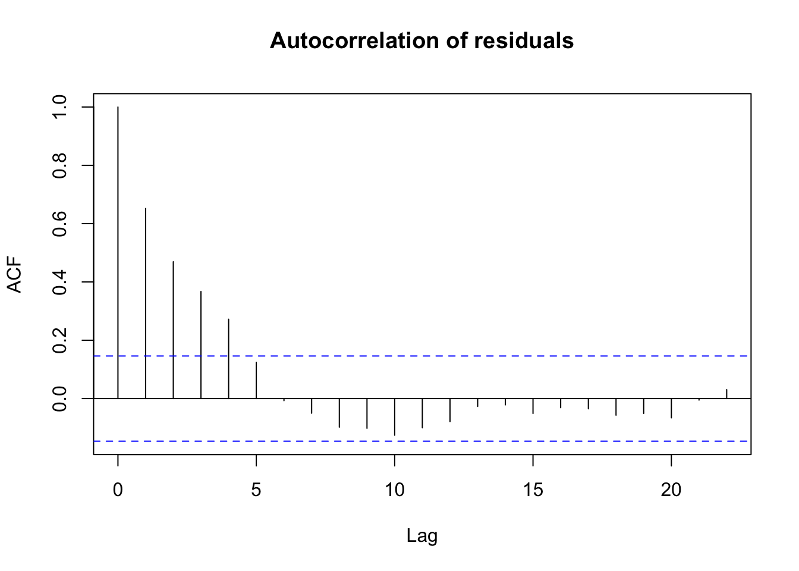

library(tidyverse)
library(easystats)
library(lme4)
library(broom.mixed)
library(rethinking) # https://github.com/rmcelreath/rethinking
library(rstanarm) # https://mc-stan.org/rstanarm/ (see also: https://paulbuerkner.com/brms/)
library(bayesplot)
theme_set(theme_bw())
options(scipen = 1, digits = 4)
set.seed(1969)Multilevel models
Introduction
This notebook illustrates an additional example of how to use fixed and mixed effects/multilevel models (incl. the actual statistical models underlying each model formula), which were illustrated during the lecture of week 12 (2025-03-31, Chapter 10: More models with interactions) by Angela Radulescu.
Additional resources
Setup environment
Background information
The data represents the average reaction time per day for subjects in a sleep deprivation study. On day 0 the subjects had their normal amount of sleep. Starting that night they were restricted to 3 hours of sleep per night. The observations represent the average reaction time on a series of tests given each day to each subject. Basically a repeated measures design.
sleepstudydat <- as.list(sleepstudy) # for use with ulam()Complete pooling
One line (in dark gray) to fit all data points irrespective of subject, i.e., no subject information is used by this model.
Maximum-likelihood (frequentist) estimates
complete.pooling.fit = lm(Reaction ~ 1 + Days, data = sleepstudy)
tidy(complete.pooling.fit, conf.int = TRUE)check_model(complete.pooling.fit)ggplot(data = sleepstudy, aes(x = Days, y = Reaction)) +
geom_point(size = 2, alpha = 0.2) +
geom_smooth(method = "lm", se = FALSE, color = "darkgray")
sleepstudy$complete.pooling.fit = fitted(complete.pooling.fit)
# plot the model results
ggplot(data = sleepstudy, aes(x = Days, y = Reaction)) +
geom_line(aes(y = complete.pooling.fit), color = "darkgray") +
geom_point(size = 2, alpha = 0.2) +
facet_wrap(~ Subject)Statistical model and Bayesian estimates
\[ \begin{aligned} \text{Reaction}_i &\sim \text{Normal}(\mu_i, \sigma) \\ \mu_i &= \alpha + \beta \times \text{Days}_i \\ \alpha &\sim \text{Normal}(250, 100) \\ \beta &\sim \text{Normal}(0, 100) \\ \sigma &\sim \text{Exponential}(0.1) \end{aligned} \]
- \(\alpha\) is the global intercept (average reaction time when \(\text{Days}=0\))
- \(\beta\) is the global slope (effect of \(\text{Days}\) on reaction time)
- \(\sigma\) is the residual standard deviation
- \(\alpha\) and \(\beta\) are shared across all subjects, meaning there is no individual variation in intercepts or slopes
complete.pooling.fit <- ulam(
alist(
Reaction ~ dnorm(mu, sigma),
mu <- a + b * Days,
a ~ dnorm(250, 100),
b ~ dnorm(0, 100),
sigma ~ dexp(0.1)
), data = dat, chains = 4, cores = 4)precis(complete.pooling.fit, depth = 2)Instead of using the ulam() function from the rethinking package, you can the stan_glm() function from the rstanarm package to fit the Bayesian model using the lm syntax.
complete.pooling.fit <- stan_glm(Reaction ~ 1 + Days, data = sleepstudy)tidy(complete.pooling.fit)mcmc_areas(complete.pooling.fit)
No pooling
One line for each subject (in blue). No information is shared across subjects, same as fitting a model independently for each subject, i.e., stratification.
Maximum-likelihood (frequentist) estimates
no.pooling.fit = lm(Reaction ~ 1 + Days + Subject + Days:Subject, data = sleepstudy)
tidy(no.pooling.fit, conf.int = TRUE)check_model(no.pooling.fit)
sleepstudy$no.pooling.fit = fitted(no.pooling.fit)
# plot the model results
ggplot(data = sleepstudy, aes(x = Days, y = Reaction)) +
geom_line(aes(y = complete.pooling.fit), color = "darkgray") +
geom_line(aes(y = no.pooling.fit), color = "blue") +
geom_point(size = 2, alpha = 0.2) +
facet_wrap(~ Subject)For example, let’s look at the estimates for the first two subjects (308 and 309), fitted independently using stratification:
tidy(lm(Reaction ~ 1 + Days, data = subset(sleepstudy, Subject == 308)), conf.int = TRUE)tidy(lm(Reaction ~ 1 + Days, data = subset(sleepstudy, Subject == 309)), conf.int = TRUE)Statistical model and Bayesian estimates
\[ \begin{aligned} \text{Reaction}_{ij} &\sim \text{Normal}(\mu_{ij}, \sigma) \\ \mu_{ij} &= a_j + b_j \times \text{Days}_{ij} \\ a_j &\sim \text{Normal}(250, 100) \\ b_j &\sim \text{Normal}(0, 100) \\ \sigma &\sim \text{Exponential}(0.1) \end{aligned} \]
- \(a_j\) is the subject-specific intercept for \(\text{Subject}_j\)
- \(b_j\) is the subject-specific slope for \(\text{Subject}_j\)
- \(\sigma\) is the residual standard deviation
- Each subject has completely independent intercepts and slopes, meaning there is no sharing of information between subjects
no.pooling.fit <- ulam(
alist(
Reaction ~ dnorm(mu, sigma),
mu <- a_subject[Subject] + b_subject[Subject] * Days,
a_subject[Subject] ~ dnorm(250, 100),
b_subject[Subject] ~ dnorm(0, 100),
sigma ~ dexp(0.1)
), data = dat, chains = 4, cores = 4)precis(no.pooling.fit, depth = 2)Instead of using the ulam() function from the rethinking package, you can the stan_glm() function from the rstanarm package to fit the Bayesian model using the lm syntax.
no.pooling.fit <- rstanarm::stan_glm(Reaction ~ 1 + Days + Subject + Days:Subject, data = sleepstudy)tidy(no.pooling.fit)mcmc_areas(no.pooling.fit)
Partial pooling (mixed model, random intercept and slope)
One line for each subject (in red). Information is shared across subjects such that each individual line is “shrinked†toward the “average†line (specified by the fixed intercept and slope and which is the same as the line fitted by the complete pooling model).
Maximum-likelihood (frequentist) estimates
partial.pooling.fit = lmer(Reaction ~ 1 + Days + (1 + Days | Subject), data = sleepstudy)
tidy(partial.pooling.fit, conf.int = TRUE)coef(partial.pooling.fit)$Subjectcheck_model(partial.pooling.fit)
sleepstudy$partial.pooling.fit = fitted(partial.pooling.fit)
# plot the model results
ggplot(data = sleepstudy, aes(x = Days, y = Reaction)) +
geom_line(aes(y = complete.pooling.fit), color = "darkgray") +
geom_line(aes(y = no.pooling.fit), color = "blue") +
geom_line(aes(y = partial.pooling.fit), color = "red") +
geom_point(size = 2, alpha = 0.2) +
facet_wrap(~ Subject)Statistical model and Bayesian estimates
\[ \begin{aligned} \text{Reaction}_{ij} &\sim \text{Normal}(\mu_{ij}, \sigma) \\ \mu_{ij} &= \alpha + \beta \times \text{Days}_{ij} + \alpha_j + \beta_j \times \text{Days}_{ij} \\ \alpha &\sim \text{Normal}(250, 100) \\ \beta &\sim \text{Normal}(0, 100) \\ \alpha_j &\sim \text{Normal}(0, \sigma_{\alpha}) \quad \text{for each subject } j \\ \beta_j &\sim \text{Normal}(0, \sigma_{\beta}) \quad \text{for each subject } j \\ \sigma_{\alpha} &\sim \text{Exponential}(0.1) \\ \sigma_{\beta} &\sim \text{Exponential}(0.1) \\ \sigma &\sim \text{Exponential}(0.1) \end{aligned} \]
- \(\alpha\) is the global mean intercept across subjects
- \(\beta\) is the global mean slope across subjects
- \(\alpha_j\) is the subject-specific deviation in intercept from \(\alpha\)
- \(\beta_j\) is the subject-specific deviation in slope from \(\beta\)
- \(\sigma_{\alpha}\) and \(\sigma_{\beta}\) control how much individual subjects vary from the global mean
- \(\sigma\) is the residual standard deviation
- Subjects partially share information, meaning individual parameters are regularized toward the global estimates
partial.pooling.fit <- ulam(
alist(
Reaction ~ dnorm(mu, sigma),
mu <- alpha + beta * Days + alpha_subject[Subject] + beta_subject[Subject] * Days,
alpha ~ dnorm(250, 100),
beta ~ dnorm(0, 100),
alpha_subject[Subject] ~ dnorm(0, sigma_alpha),
beta_subject[Subject] ~ dnorm(0, sigma_beta),
sigma_alpha ~ dexp(0.1),
sigma_beta ~ dexp(0.1),
sigma ~ dexp(0.1)
), data = dat, chains = 4, cores = 4)precis(partial.pooling.fit, depth = 2)Instead of using the ulam() function from the rethinking package, you can the stan_glmer() function from the rstanarm package to fit the Bayesian model using the lmer syntax.
partial.pooling.fit <- stan_glmer(Reaction ~ 1 + Days + (1 + Days | Subject), data = sleepstudy)tidy(partial.pooling.fit)mcmc_areas(partial.pooling.fit, pars = vars(-starts_with("Sigma")))Partial pooling (mixed model, random intercept and fixed slope)
Maximum-likelihood (frequentist) estimates
partial.pooling.fit.fixed_slope = lmer(Reaction ~ 1 + Days + (1 | Subject), data = sleepstudy)
tidy(partial.pooling.fit.fixed_slope, conf.int = TRUE)coef(partial.pooling.fit.fixed_slope)$Subjectcheck_model(partial.pooling.fit.fixed_slope)
sleepstudy$partial.pooling.fit.fixed_slope = fitted(partial.pooling.fit.fixed_slope)
# plot the model results
ggplot(data = sleepstudy, aes(x = Days, y = Reaction)) +
geom_line(aes(y = complete.pooling.fit), color = "darkgray") +
geom_line(aes(y = no.pooling.fit), color = "blue") +
geom_line(aes(y = partial.pooling.fit.fixed_slope), color = "red") +
geom_point(size = 2, alpha = 0.2) +
facet_wrap(~ Subject)
Statistical model and Bayesian estimates
\[ \begin{aligned} \text{Reaction}_{ij} &\sim \text{Normal}(\mu_{ij}, \sigma) \\ \mu_{ij} &= \alpha + \beta \times \text{Days}_{ij} + \alpha_j \\ \alpha &\sim \text{Normal}(250, 100) \\ \beta &\sim \text{Normal}(0, 100) \\ \alpha_j &\sim \text{Normal}(0, \sigma_{\alpha}) \quad \text{for each subject } j \\ \sigma_{\alpha} &\sim \text{Exponential}(0.1) \\ \sigma &\sim \text{Exponential}(0.1) \end{aligned} \]
- \(\alpha\) is the global mean intercept across subjects
- \(\beta\) is the global slope (fixed effect of \(\text{Days}\))
- \(\alpha_j\) is the subject-specific deviation in intercept from \(\alpha\)
- \(\sigma_{\alpha}\) controls how much intercepts vary across subjects
- \(\sigma\) is the residual standard deviation
- Subjects share the same slope but have varying intercepts
partial.pooling.fit.fixed_slope <- ulam(
alist(
Reaction ~ dnorm(mu, sigma),
mu <- alpha + beta * Days + alpha_subject[Subject],
alpha ~ dnorm(250, 100),
beta ~ dnorm(0, 100),
alpha_subject[Subject] ~ dnorm(0, sigma_alpha),
sigma_alpha ~ dexp(0.1),
sigma ~ dexp(0.1)
), data = dat, chains = 4, cores = 4)precis(partial.pooling.fit.fixed_slope, depth = 2)Instead of using the ulam() function from the rethinking package, you can the stan_glmer() function from the rstanarm package to fit the Bayesian model using the lmer syntax.
partial.pooling.fit.fixed_slope <- stan_glmer(Reaction ~ 1 + Days + (1 | Subject), data = sleepstudy)tidy(partial.pooling.fit.fixed_slope)mcmc_areas(partial.pooling.fit.fixed_slope, pars = vars(-starts_with("Sigma")))Partial pooling (mixed model, fixed intercept and random slope)
Maximum-likelihood (frequentist) estimates
partial.pooling.fit.fixed_intercept = lmer(Reaction ~ 1 + Days + (0 + Days | Subject), data = sleepstudy)
tidy(partial.pooling.fit.fixed_intercept, conf.int = TRUE)coef(partial.pooling.fit.fixed_intercept)$Subjectcheck_autocorrelation(partial.pooling.fit.fixed_intercept)Warning: Autocorrelated residuals detected (p < .001).sleepstudy$partial.pooling.fit.fixed_intercept = fitted(partial.pooling.fit.fixed_intercept)
# plot the model results
ggplot(data = sleepstudy, aes(x = Days, y = Reaction)) +
geom_line(aes(y = complete.pooling.fit), color = "darkgray") +
geom_line(aes(y = no.pooling.fit), color = "blue") +
geom_line(aes(y = partial.pooling.fit.fixed_intercept), color = "red") +
geom_point(size = 2, alpha = 0.2) +
facet_wrap(~ Subject)
Statistical model and Bayesian estimates
\[ \begin{aligned} \text{Reaction}_{ij} &\sim \text{Normal}(\mu_{ij}, \sigma) \\ \mu_{ij} &= \alpha + \beta \times \text{Days}_{ij} + \beta_j \times \text{Days}_{ij} \\ \alpha &\sim \text{Normal}(250, 100) \\ \beta &\sim \text{Normal}(0, 100) \\ \beta_j &\sim \text{Normal}(0, \sigma_{\beta}) \\ \sigma_{\beta} &\sim \text{Exponential}(0.1) \\ \sigma &\sim \text{Exponential}(0.1) \end{aligned} \]
- \(\alpha\) is the global mean intercept across subjects
- \(\beta\) is the global mean slope across subjects
- \(\beta_j\) is the subject-specific deviation in slope from \(\beta\)
- \(\sigma_{\beta}\) controls how much slopes vary across subjects
- \(\sigma\) is the residual standard deviation
- Subjects share the same intercept but have varying slopes
partial.pooling.fit.fixed_intercept <- ulam(
alist(
Reaction ~ dnorm(mu, sigma),
mu <- alpha + beta * Days + beta_subject[Subject] * Days,
alpha ~ dnorm(250, 100),
beta ~ dnorm(0, 100),
beta_subject[Subject] ~ dnorm(0, sigma_beta),
sigma_beta ~ dexp(0.1),
sigma ~ dexp(0.1)
), data = dat, chains = 4, cores = 4)precis(partial.pooling.fit.fixed_intercept, depth = 2)Instead of using the ulam() function from the rethinking package, you can the stan_glmer() function from the rstanarm package to fit the Bayesian model using the lmer syntax.
partial.pooling.fit.fixed_intercept <- stan_glmer(Reaction ~ 1 + Days + (0 + Days | Subject), data = sleepstudy, )tidy(partial.pooling.fit.fixed_intercept)mcmc_areas(partial.pooling.fit.fixed_intercept, pars = vars(-starts_with("Sigma")))
Compare models
compare_performance(complete.pooling.fit, no.pooling.fit, partial.pooling.fit, partial.pooling.fit.fixed_slope, partial.pooling.fit.fixed_intercept)Print environment
sessioninfo::session_info()─ Session info ───────────────────────────────────────────────────────────────
setting value
version R version 4.4.3 (2025-02-28)
os macOS Sequoia 15.3.2
system aarch64, darwin20
ui X11
language (EN)
collate en_US.UTF-8
ctype en_US.UTF-8
tz America/New_York
date 2025-04-01
pandoc 3.2 @ /Applications/RStudio.app/Contents/Resources/app/quarto/bin/tools/aarch64/ (via rmarkdown)
quarto 1.6.42 @ /usr/local/bin/quarto
─ Packages ───────────────────────────────────────────────────────────────────
package * version date (UTC) lib source
abind 1.4-8 2024-09-12 [1] CRAN (R 4.4.1)
backports 1.5.0 2024-05-23 [1] CRAN (R 4.4.0)
base64enc 0.1-3 2015-07-28 [1] CRAN (R 4.4.0)
bayesplot * 1.11.1 2024-02-15 [1] CRAN (R 4.4.0)
bayestestR * 0.15.2 2025-02-07 [1] CRAN (R 4.4.1)
boot 1.3-31 2024-08-28 [2] CRAN (R 4.4.3)
broom 1.0.7 2024-09-26 [1] CRAN (R 4.4.1)
broom.mixed * 0.2.9.6 2024-10-15 [1] CRAN (R 4.4.1)
checkmate 2.3.2 2024-07-29 [1] CRAN (R 4.4.0)
cli 3.6.4 2025-02-13 [1] CRAN (R 4.4.1)
cmdstanr * 0.8.1 2024-06-06 [1] https://stan-dev.r-universe.dev (R 4.4.0)
coda 0.19-4.1 2024-01-31 [1] CRAN (R 4.4.0)
codetools 0.2-20 2024-03-31 [2] CRAN (R 4.4.3)
colorspace 2.1-1 2024-07-26 [1] CRAN (R 4.4.0)
colourpicker 1.3.0 2023-08-21 [1] CRAN (R 4.4.0)
correlation * 0.8.7 2025-03-03 [1] CRAN (R 4.4.1)
crosstalk 1.2.1 2023-11-23 [1] CRAN (R 4.4.0)
curl 6.2.2 2025-03-24 [1] CRAN (R 4.4.1)
data.table 1.17.0 2025-02-22 [1] CRAN (R 4.4.1)
datawizard * 1.0.2 2025-03-24 [1] CRAN (R 4.4.1)
digest * 0.6.37 2024-08-19 [1] CRAN (R 4.4.1)
distributional 0.5.0 2024-09-17 [1] CRAN (R 4.4.1)
dplyr * 1.1.4 2023-11-17 [1] CRAN (R 4.4.0)
DT 0.33 2024-04-04 [1] CRAN (R 4.4.0)
dygraphs 1.1.1.6 2018-07-11 [1] CRAN (R 4.4.0)
easystats * 0.7.4 2025-02-06 [1] CRAN (R 4.4.1)
effectsize * 1.0.0 2024-12-10 [1] CRAN (R 4.4.1)
emmeans 1.11.0 2025-03-20 [1] CRAN (R 4.4.1)
estimability 1.5.1 2024-05-12 [1] CRAN (R 4.4.0)
evaluate 1.0.3 2025-01-10 [1] CRAN (R 4.4.1)
farver 2.1.2 2024-05-13 [1] CRAN (R 4.4.0)
fastmap 1.2.0 2024-05-15 [1] CRAN (R 4.4.0)
forcats * 1.0.0 2023-01-29 [1] CRAN (R 4.4.0)
furrr 0.3.1 2022-08-15 [1] CRAN (R 4.4.0)
future 1.34.0 2024-07-29 [1] CRAN (R 4.4.0)
generics 0.1.3 2022-07-05 [1] CRAN (R 4.4.0)
ggplot2 * 3.5.1 2024-04-23 [1] CRAN (R 4.4.0)
ggrepel 0.9.6 2024-09-07 [1] CRAN (R 4.4.1)
ggridges 0.5.6 2024-01-23 [1] CRAN (R 4.4.0)
globals 0.16.3 2024-03-08 [1] CRAN (R 4.4.0)
glue 1.8.0 2024-09-30 [1] CRAN (R 4.4.1)
gridExtra 2.3 2017-09-09 [1] CRAN (R 4.4.0)
gtable 0.3.6 2024-10-25 [1] CRAN (R 4.4.1)
gtools 3.9.5 2023-11-20 [1] CRAN (R 4.4.0)
hms 1.1.3 2023-03-21 [1] CRAN (R 4.4.0)
htmltools 0.5.8.1 2024-04-04 [1] CRAN (R 4.4.0)
htmlwidgets 1.6.4 2023-12-06 [1] CRAN (R 4.4.0)
httpuv 1.6.15 2024-03-26 [1] CRAN (R 4.4.0)
igraph 2.1.4 2025-01-23 [1] CRAN (R 4.4.1)
inline 0.3.21 2025-01-09 [1] CRAN (R 4.4.1)
insight * 1.1.0 2025-03-01 [1] CRAN (R 4.4.1)
jsonlite 2.0.0 2025-03-27 [1] CRAN (R 4.4.1)
knitr 1.50 2025-03-16 [1] CRAN (R 4.4.1)
labeling 0.4.3 2023-08-29 [1] CRAN (R 4.4.0)
later 1.4.1 2024-11-27 [1] CRAN (R 4.4.1)
lattice 0.22-6 2024-03-20 [2] CRAN (R 4.4.3)
lifecycle 1.0.4 2023-11-07 [1] CRAN (R 4.4.0)
listenv 0.9.1 2024-01-29 [1] CRAN (R 4.4.0)
lme4 * 1.1-37 2025-03-26 [1] CRAN (R 4.4.1)
loo 2.8.0 2024-07-03 [1] CRAN (R 4.4.0)
lubridate * 1.9.4 2024-12-08 [1] CRAN (R 4.4.1)
magrittr 2.0.3 2022-03-30 [1] CRAN (R 4.4.0)
markdown 2.0 2025-03-23 [1] CRAN (R 4.4.1)
MASS 7.3-64 2025-01-04 [2] CRAN (R 4.4.3)
Matrix * 1.7-2 2025-01-23 [2] CRAN (R 4.4.3)
matrixStats 1.5.0 2025-01-07 [1] CRAN (R 4.4.1)
mgcv 1.9-1 2023-12-21 [2] CRAN (R 4.4.3)
mime 0.13 2025-03-17 [1] CRAN (R 4.4.1)
miniUI 0.1.1.1 2018-05-18 [1] CRAN (R 4.4.0)
minqa 1.2.8 2024-08-17 [1] CRAN (R 4.4.0)
modelbased * 0.10.0 2025-03-10 [1] CRAN (R 4.4.1)
multcomp 1.4-28 2025-01-29 [1] CRAN (R 4.4.1)
munsell 0.5.1 2024-04-01 [1] CRAN (R 4.4.0)
mvtnorm 1.3-3 2025-01-10 [1] CRAN (R 4.4.1)
nlme 3.1-167 2025-01-27 [2] CRAN (R 4.4.3)
nloptr 2.2.1 2025-03-17 [1] CRAN (R 4.4.1)
parallelly 1.43.0 2025-03-24 [1] CRAN (R 4.4.1)
parameters * 0.24.2 2025-03-04 [1] CRAN (R 4.4.1)
patchwork 1.3.0 2024-09-16 [1] CRAN (R 4.4.1)
performance * 0.13.0 2025-01-15 [1] CRAN (R 4.4.1)
pillar 1.10.1 2025-01-07 [1] CRAN (R 4.4.1)
pkgbuild 1.4.7 2025-03-24 [1] CRAN (R 4.4.1)
pkgconfig 2.0.3 2019-09-22 [1] CRAN (R 4.4.0)
plyr 1.8.9 2023-10-02 [1] CRAN (R 4.4.0)
posterior * 1.6.1 2025-02-27 [1] CRAN (R 4.4.1)
processx 3.8.6 2025-02-21 [1] CRAN (R 4.4.1)
promises 1.3.2 2024-11-28 [1] CRAN (R 4.4.1)
ps 1.9.0 2025-02-18 [1] CRAN (R 4.4.1)
purrr * 1.0.4 2025-02-05 [1] CRAN (R 4.4.1)
QuickJSR 1.6.0 2025-02-26 [1] CRAN (R 4.4.1)
R6 2.6.1 2025-02-15 [1] CRAN (R 4.4.1)
rbibutils 2.3 2024-10-04 [1] CRAN (R 4.4.1)
Rcpp * 1.0.14 2025-01-12 [1] CRAN (R 4.4.1)
RcppParallel 5.1.10 2025-01-24 [1] CRAN (R 4.4.1)
Rdpack 2.6.3 2025-03-16 [1] CRAN (R 4.4.1)
readr * 2.1.5 2024-01-10 [1] CRAN (R 4.4.0)
reformulas 0.4.0 2024-11-03 [1] CRAN (R 4.4.1)
report * 0.6.1 2025-02-07 [1] CRAN (R 4.4.1)
reshape2 1.4.4 2020-04-09 [1] CRAN (R 4.4.0)
rethinking * 2.42 2025-03-19 [1] Github (rmcelreath/rethinking@ac1b3b2)
rlang 1.1.5 2025-01-17 [1] CRAN (R 4.4.1)
rmarkdown 2.29 2024-11-04 [1] CRAN (R 4.4.1)
rstan 2.35.0.9000 2024-06-06 [1] https://stan-dev.r-universe.dev (R 4.4.0)
rstanarm * 2.32.1 2024-01-18 [1] CRAN (R 4.4.0)
rstantools 2.4.0 2024-01-31 [1] CRAN (R 4.4.0)
rstudioapi 0.17.1 2024-10-22 [1] CRAN (R 4.4.1)
sandwich 3.1-1 2024-09-15 [1] CRAN (R 4.4.1)
scales 1.3.0 2023-11-28 [1] CRAN (R 4.4.0)
see * 0.11.0 2025-03-11 [1] CRAN (R 4.4.1)
sessioninfo 1.2.3 2025-02-05 [1] CRAN (R 4.4.1)
shape 1.4.6.1 2024-02-23 [1] CRAN (R 4.4.0)
shiny 1.10.0 2024-12-14 [1] CRAN (R 4.4.1)
shinyjs 2.1.0 2021-12-23 [1] CRAN (R 4.4.0)
shinystan 2.6.0 2022-03-03 [1] CRAN (R 4.4.0)
shinythemes 1.2.0 2021-01-25 [1] CRAN (R 4.4.0)
StanHeaders 2.35.0.9000 2024-06-06 [1] https://stan-dev.r-universe.dev (R 4.4.0)
stringi 1.8.7 2025-03-27 [1] CRAN (R 4.4.1)
stringr * 1.5.1 2023-11-14 [1] CRAN (R 4.4.0)
survival 3.8-3 2024-12-17 [2] CRAN (R 4.4.3)
tensorA 0.36.2.1 2023-12-13 [1] CRAN (R 4.4.0)
TH.data 1.1-3 2025-01-17 [1] CRAN (R 4.4.1)
threejs 0.3.3 2020-01-21 [1] CRAN (R 4.4.0)
tibble * 3.2.1 2023-03-20 [1] CRAN (R 4.4.0)
tidyr * 1.3.1 2024-01-24 [1] CRAN (R 4.4.0)
tidyselect 1.2.1 2024-03-11 [1] CRAN (R 4.4.0)
tidyverse * 2.0.0 2023-02-22 [1] CRAN (R 4.4.0)
timechange 0.3.0 2024-01-18 [1] CRAN (R 4.4.0)
tzdb 0.5.0 2025-03-15 [1] CRAN (R 4.4.1)
V8 6.0.3 2025-03-26 [1] CRAN (R 4.4.1)
vctrs 0.6.5 2023-12-01 [1] CRAN (R 4.4.0)
withr 3.0.2 2024-10-28 [1] CRAN (R 4.4.1)
xfun 0.51 2025-02-19 [1] CRAN (R 4.4.1)
xtable 1.8-4 2019-04-21 [1] CRAN (R 4.4.0)
xts 0.14.1 2024-10-15 [1] CRAN (R 4.4.1)
yaml 2.3.10 2024-07-26 [1] CRAN (R 4.4.0)
zoo 1.8-13 2025-02-22 [1] CRAN (R 4.4.1)
[1] /Users/marcoe02/.Rlib
[2] /Library/Frameworks/R.framework/Versions/4.4-arm64/Resources/library
* ── Packages attached to the search path.
──────────────────────────────────────────────────────────────────────────────